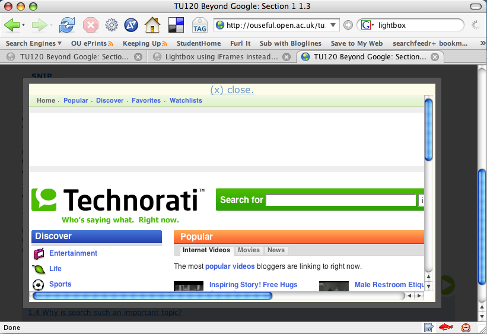

October 03, 2006
Interaction Design - "Now Follow This Link"
Every time I get involved with producing new online course materials, I get fired up by the possibility of working out new styles of interaction that may or may not prove to be very OUseful. Being a reflective practitioner (?!), I also take these opportunities to explore my own understanding of how online course materials differ from our more traditional print offerings.
Take weblinks for example. Our online course materials increasingly make use of embedded links to 'additional reading' materials, as well as links out to pages we want students to read and critique, or comment upon, as part of a structured activity. Typically, these links are well signposted and explicitly presented as links. Here's an example from Beyond Google:
In this exercise I want you to get a feeling for the nature and extent of UGC. You should expect to spend at least an hour on this. Indulge your curiosity and follow links that interest you.
1. Visit Technorati
Use the search box to look for blogs on subjects that interest you. Follow some of the links to get a feeling for each type of blog. (Tip: you can usually get to the blog's home page by clicking on its title.)
2. Visit Flickr
Get a feel for the site.
continues...
We also use inline links, which are slightly more reminiscent of the blogging style:
Yahoo! make one such 'Related Suggestions' tool available as a web service that other people can build into their own systems.
You can try out the 'Related Suggestions' service using your own search terms
For students who are not confident web users, how to approach embedded links may be problematic. Should I click through as soon as I see the link, read the page and come back to it? Is the link a 'must follow' link, or is it optional, and so on. The text surrounding the link text can help here, but even so, how the student should address the content linked to from an inline link is not obvious.
Under certain circumstances, one way of interpreting the sense of an inline link is to treat it as akin to a glossary item, or potentially an explanatory note, depending on context. That is, it is there to provide either an elucidation or clarification of a term or concept (the term or concept represented by the link text), or to explore, or justify, that term in a little more detail.
Another problem with how to address links as educational designers is where to open the pages that are linked to, and to manage through instruction/guidance, and on behalf of the user, the number of pages that are likely to be open at anyone one time.
If the links open the page into the same window, only one page can be open at any one time - the user can't "queue up" several open pages at once that they can then visit in turn. Opening links into the same problem may cause problems with navigation though - the user loses site of the course material page they followed the link from, and must user the back button or other browser navigational tools to recover the page.
For non-tabbed browsers such as IE6, opening links in new pages can cause the user a problem with window management, and poses questions for the interaction designer along the lines of - how big should newly open windows be, should links open into one and the same new window or multiple window, where should newly opened windows appear on the screen, how large should they be, how should they be layed out (should the browser toolbar be displayed, for example), which window should take the focus, and so on.
Tabbed browsers make life much easier - and when IE7 is made available as a Windows update I think we really should push for students to download it on usability grounds, as well as security. (Whilst we could push Firefox, and do make it available on the Online Applications CD-ROM that is sent to all our students, the reality is that, along with the majority of PC users, they are most comfortable using the tools Microsoft installs for them).
As far as I know, no-one has written yet about how universal tabbed browsing might change elearning activity design through the interactions it affords, but I think that this is an area where huge developments in usability and the way we approach the use of outlinks from elearning materials might result.
(Using tabbed displays within a single page is another matter altogether. See for example Using iframes in a Tab Widget to Support Web Page Comparison or SearchTab Display of Several Web Search Engines. )
Overlaying pages using transparency is yet another possibility and one that I explored yesterday with a slightly hacked lightbox script. Lightboxes are rather neat style effects in which a dark, semi-transparent overlay is placed on top of a web page, with a 'normal' brightness (i.e. now effectively highlighted) image or dialogue (such as a login panel) placed centrally within the window.
The idea was to use a lightbox containing an iframe to display a web page that a student had clicked through to. This keeps the student in the frame of reference of the course material (they can see the course material through the dark, transparent overlay) and yet forces them to focus on the newly opened window (which may or may not be an external site). Here's a demo: open a link in a lightbox (follow a lightbox link...):


More often than not, this sort of playing I engage in goes nowhere, in part because I don't think things through enough to persuade people of the merits - if any - of the ideas I tinker with (completer-finisher is one of the team roles that I just don't do!), but also because there hasn't really been anywhere in the OU where I felt I could raise and discuss potentially innovative ideas. One reason for blogging them, I guess...
But today I got an invite to attend a "new OU eLearning Community (eLC)", along with a host of others active in the area (it was interesting to see who was on the list) and the "new curriculum innovation and elearning innovation fellows (20 new OU appointments)". I didn't know we had such people?!
Anyway, along with a Digilab - a new media oriented, physical playspace that will open in the Library next month (and about which I'll post in a month or so) - it will be interesting to see whether we can start - and maintain - a cross-campus elearning ideas factory that will allow us to continue to drive the development of pedagogically sound, student-centred online course materials. I'll keep you posted... (err, in fact, if you an OU internal reader of this blog, you probably should have been invited..?)
LAUNCH DATE IS TUESDAY, 28/11/06, IN THE LIBRARY, 5-7pm
Posted by ajh59 at October 3, 2006 10:59 PM